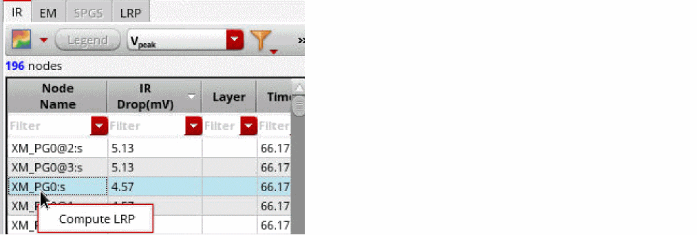
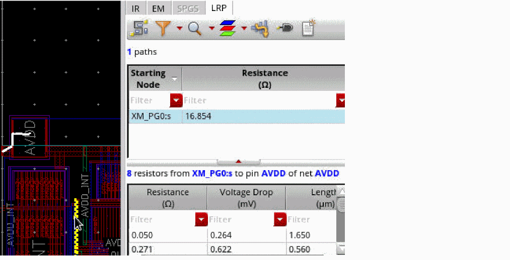

Selecting a Node for LRP Analysis from the IR Tab
You can select any node for LRP analysis directly from the IR tab. After loading the nodes of a net, right-clicking a node displays the Compute LRP option.

When Compute LRP is selected, the LRP tab opens and displays the selected node and the calculated LRP resistance from pin to that particular node.

Related Topics
Return to top